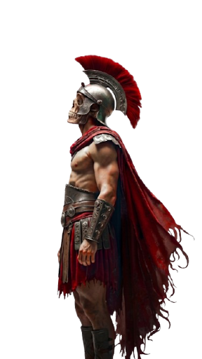

Courage
To stand firm against the encroaching darkness. A steadfast spirit that outlasts mortal fear.

In Death
This passage delves into the profound nature of duty, honor, and legacy, illustrating that a genuine commitment to one's values or mission extends beyond physical death. Such a commitment transcends the boundaries of time and mortal life, evolving into a lasting influence that persists through the actions, memories, and inspirations it leaves behind.
Duty, therefore, is not merely a responsibility but a timeless force that endures beyond our physical existence. Furthermore, the passage emphasizes the resilience of the human spirit, revealing that the highest virtues like courage, loyalty, and sacrifice are not limited to our earthly existence.
To stand firm against the encroaching darkness. A steadfast spirit that outlasts mortal fear.
Bound by blood and honor. A connection that persists long after we are gone, inspiring future generations.
The ultimate offering for a purpose greater than oneself. Imbuing true honor with timeless significance.
These virtues become part of something greater, continuing to inspire future generations long after we are gone. This enduring dedication highlights how a steadfast spirit can outlast death.